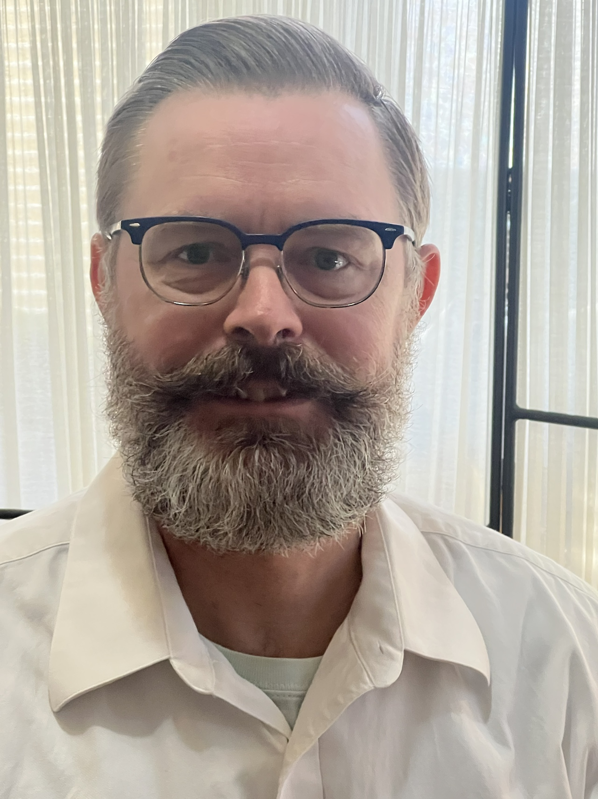

I am qualified for the position [Position Name] because I have vast experience in a variety of fields that give me life experience that most other candidates will not possess. Please note below how my work experience and education blend with my life history and personal values.
Already as a pre-teen, I was a newspaper delivery boy for the Burlington (IA) Hawk Eye and the Des Moines Register. I managed multiple routes, collected subscription dues, and maintained customer relationships, which earned me several 'Newspaper Person of the Month' recognitions. During this time, I also built a small neighborhood business mowing lawns, shoveling snow, and doing odd jobs — work that expanded through referrals form satisfied customers.
I gained early construction experience assisting my father with home and client projects. By age twelve, I was completing small assignments independently, including roofing an addition to our garage — a task that strengthened my confidence with tools, planning, and hands‑on problem‑solving.
In 1989, I worked at Spahn & Rose Lumber in New London, Iowa, where I reorganized the stockroom into a labeled, efficient system that improved daily operations and kept the showroom floor stocked and merchandised. In 1991, I ran my own door and trim staining and finishing business, managing deadlines, quality control, and contractor relationships.
In 1994, I moved to Patterson, NY to volunteer at the world headquarters of Jehovah’s Witnesses. I began in the dining department, serving meals for 1,200 people three times daily. I advanced from waiter to trainer and then to coordinator of the dining room operation, overseeing scheduling, training, and high‑volume service.
In 1998, I transitioned to Image Services, a support team for the Art Department, which illustrated the publications produced by the Watchtower Bible and Tract Society. Over 13 years, I worked in physical and digital media asset management, handling structured data entry, metadata indexing, and large‑scale asset organization.
My responsibilities expanded to include media acquisitions, where I sourced assets, negotiated usage rights, and worked with photographers and major image banks. I attended industry events in New York City and toured AP Photo’s headquarters, gaining insight into professional media workflows.
As curator of painted artwork, I managed the storage, cataloging, and global distribution of the original artwork and commissioned reproductions. Later, as a biblical researcher, I provided illustrators with historically accurate visual references for complex scenes.
In 2007, I became a digital asset project manager, overseeing the full lifecycle of media assets — acquisition, research, indexing, permissions, and quality control. I also served as an in‑team technical support liaison during the organization’s transition from Windows to macOS, troubleshooting hardware and software issues and helping colleagues adapt to new systems.
One of my final responsibilities in Image Services involved supporting creative team meetings by preparing materials, anticipating needs, and contributing to collaborative planning sessions.
My wife and I spent 8 years of volunteer work in Israel. While there, I prepared and conducted tours of biblical sites with historic significance, particularly in Jerusalem.
Currently I assist an app developer to create a proprietary web-based workflow app. It is based on Convex and SvelteKit, and the mobile app version is built on Dioxis.
I graduated from West Burlington Arnold High School in 1992 as Salutatorian with a 3.9 GPA, excelling in subjects such as Accounting, Chemistry, Physics, and advanced mathematics.
My varied work experience during my childhood and early adulthood in construction, small business, and my service roles gave me practical training in planning and problem‑solving, forming a foundation that later anchored my technical and project‑oriented learning.
In 1994, I moved to Patterson NY, where I volunteered at the world headquarters of Jehovah’s Witnesses. There I received training in institutional catering, eventually becoming head trainer responsible for preparing others for this work.
Beginning in 1998, I received extensive on‑the‑job training in digital and physical media asset management. I learned structured data entry and metadata workflows. During this period, our team transitioned from a database built on Microsoft Access to SQL Server, and I participated in pre-release functionality meetings and post-release implementation seminars that introduced me to backend systems and database logic.
My training also included media acquisitions, artwork curation, and research‑driven creative support, all of which required precision, documentation, and coordination across teams.
In 2011–2012, my wife and I attended the six‑month Watchtower Bible School of Gilead, which emphasizes accurate, unbiased biblical research and the ability to draw practical lessons from scriptural principles. The program strengthened our communication and cross‑cultural skills and prepared us to provide encouragement and stability to our community of congregations of Jehovah’s Witnesses in Israel.
From 2018 onward, I expanded my technical education through structured online coursework. I completed certificates in networking fundamentals, CCNA Security (VPNs), and the full CCNA 200‑301 curriculum. I later added training in HTML, CSS, and JavaScript, and manage a web server and network attached storage using a Synology server.
I bring a strong blend of technical adaptability and analytical thinking. I am fluent in English and Russian, with limited proficiency in Hebrew, and I have hands‑on experience across multiple digital platforms and networking environments. My technical background includes familiarity with Cisco IOS CLI, virtualization platforms such as VMWare (Fusion and Workstation) and VirtualBox, and operating systems like Windows, Ubuntu, macOS, and various Cisco IOS appliances. I also have worked with tools such as Cisco Packet Tracer, GNS3, PowerShell, and Visual Studio Code.
My experience with enterprise-scale database systems strengthened my ability to work with structured data, metadata, and large‑scale information workflows, and has given me a practical understanding of database logic and software‑driven systems.
I have a working understanding of JavaScript and have deployed and maintained my own website on a Synology NAS using HTML/CSS and JavaScript. I manually coded my web site and added a two-way chat apparatus on my “Contact Me” page — a real‑world full‑stack project that strengthened my practical development skills. I leveraged AI to improve my backend setup and full stack troubleshooting.
I am actively developing new skills in full‑stack web development and Agentic AI, and gaining this experience has helped me discover a capacity for creativity that motivates me to continue growing in both web development and AI‑enhanced productivity.
My values form the core of my work ethic. Loyalty, honesty, faithfulness, and respect are principles I actively live by. This consistency has earned me trust in every environment I’ve worked in.
These values shape my leadership and communication style. I treat colleagues with humility and respect, I seek to assign others dignity in every interaction, and give direction with clarity and kindness. Whether training a team, supporting a colleague through a transition, or coordinating a workflow, I bring steadiness and fairness.
I work well independently or collaboratively and approach both with the same level of conscientiousness. I look for ways to bridge communication gaps and improve cooperation.
Some may view principled ethics as unrealistic in modern workplaces, but my experience has shown the opposite. People appreciate working with someone who is steady, honest, and dependable. My integrity is not only a personal conviction — it is a professional asset.
My interests reflect a natural curiosity about how things work and a desire to learn, repair, and build. I enjoy assembling model cars, cycling, and fixing items that need repair — activities that mirror the analytical mindset I bring to technical problem‑solving.
I also pursue self‑directed learning, regularly reading technical material simply for the enjoyment of understanding new concepts. This curiosity fuels my hunger for learning, and I perform best when I understand systems at a foundational level.
Most of my hobbies are solitary or shared with my wife, giving me time to think, recharge, and explore ideas at my own pace. Engaging in these interests strengthens my self‑confidence and provides the energy and clarity I bring to my work.